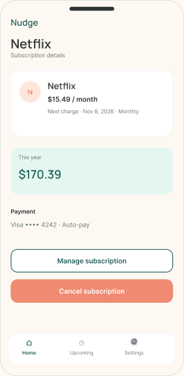
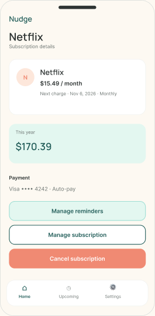
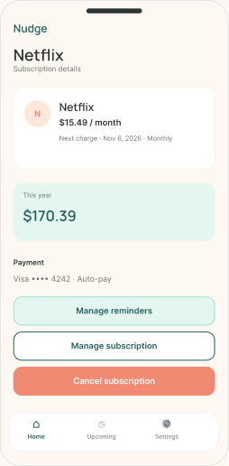
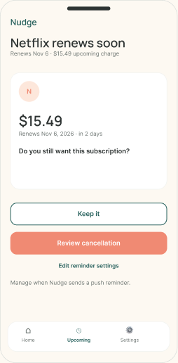
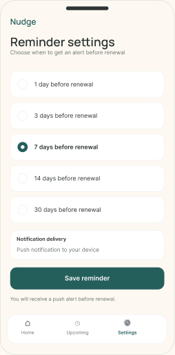

Visibility
See active subscriptions and recurring expenses in one place.
Less subscription stress. More control.
A clearer way to track recurring costs, manage subscriptions, and stay ahead of surprise renewals.
Explore the case study ↓Subscriptions are easy to sign up for, but much harder to keep track of.
How might we make recurring spending easier to see, understand, and manage—without creating another complicated financial tool?
See active subscriptions and recurring expenses in one place.
Make managing or canceling a service easier to navigate.
Understand what will renew and when.
The experience was shaped around visibility, control, and renewal awareness.
Can people quickly find a subscription and understand its cost?
Can people locate cancellation without unnecessary friction?
Can people find and manage upcoming renewal reminders?
Early feedback revealed ambiguity around renewal timing, reinforcing the need for clear, specific language.
User flows helped define what each screen needed to communicate.
See subscriptions and their individual costs in a clear dashboard.
Find details and the available cancellation actions.
Review upcoming renewals and manage reminder settings.
Low-fidelity structure developed into calm, readable screens that put key subscription information first.
Subscription costs and renewal dates are presented as scannable, actionable information.
A light, restrained interface uses teal for important controls and coral for cancellation actions.
Related actions appear together where users are most likely to need them.
Four respondents tried the clickable prototype and completed an unmoderated questionnaire.
Key insight: Two of four respondents had difficulty finding reminder settings.
This was a small, self-selected, unmoderated sample. The figures reflect self-reported experiences, not observed task success.
Feedback pointed toward navigation and clarity—not a complete redesign.
Reminder settings were difficult to find.
Make reminder controls visible inside subscription details.
Subscription-management actions felt separated.
Group reminders, management, and cancellation together.
Notification behavior was unclear.
Explain when and how push alerts are delivered.
A new reminder entry point brings related subscription actions into the same place.


Clearer notifications. Clearer actions. Updated renewal-alert language and notification instructions explain what users can expect.
Targeted changes make the next action easier to discover.



The final changes have not yet been validated in another round of participant testing.
A feature can exist and still be hard to find. The Nudge project reinforced the value of designing around users’ expectations, prioritizing clarity, and letting feedback guide iteration.